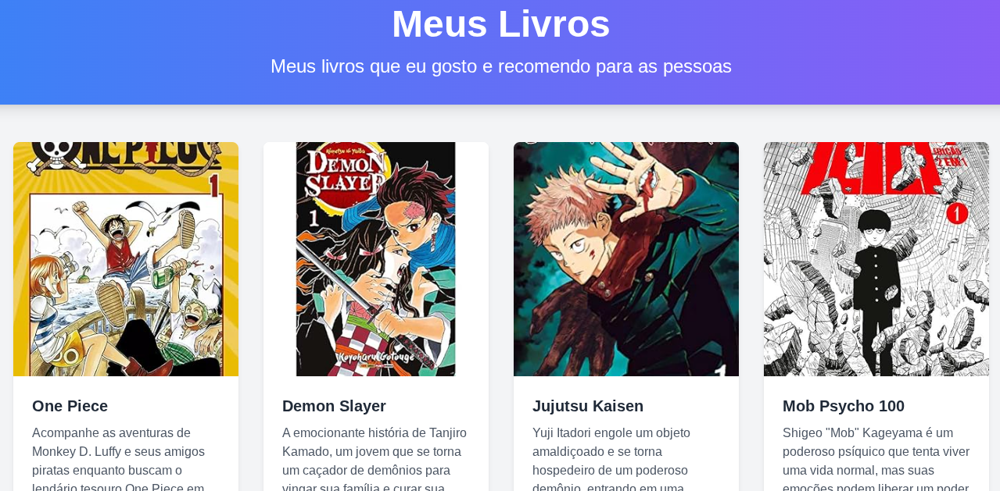
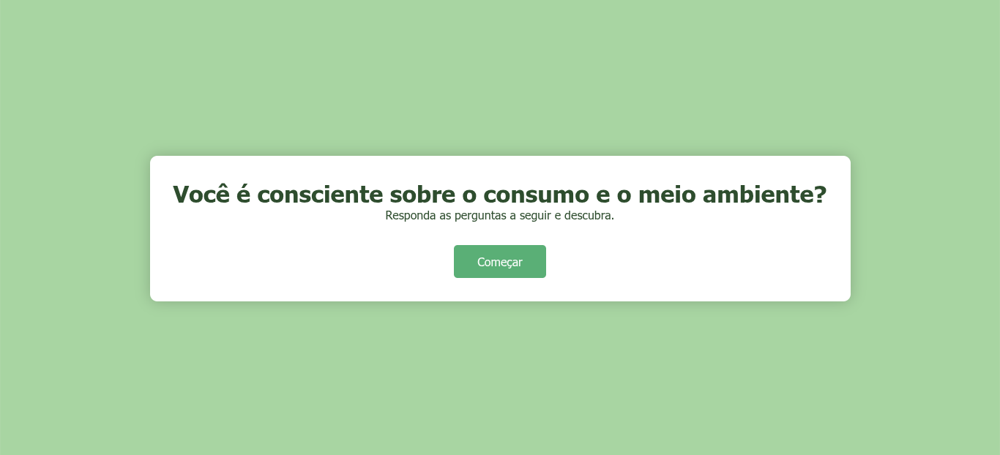
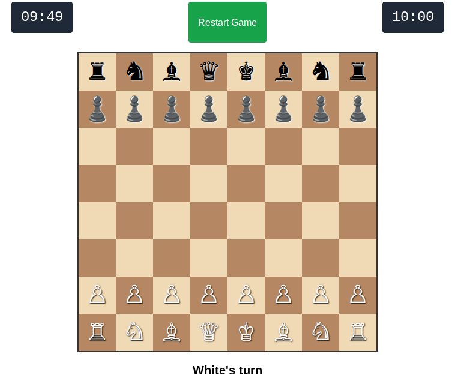

Meus projetos

Meus Livros: Uma Webpage Personalizada
Este projeto é uma página web que apresenta uma lista dos meus livros favoritos, incluindo informações sobre os autores, datas de publicação e links para compra na Amazon.

Decidindo o Futuro: você é consciente sobre o consumo e o meio ambiente.
Esse é um site onde faz perguntas sobre a consciencia do meio ambiente um simples site e desenvolvido rapidamente para as pessoas lembrarem a importante de conservar o meio ambiente.

Jogo de xadrez de 2 pessoas.
Este projeto de jogo de xadrez cria uma experiência de jogo de extratégia usando peças onde seu objetivo é eliminar o rei de seuu oponente antes que ele derrote o seu usando as peças, onde cada uma delas tem suas funcionalidade e estratégias.